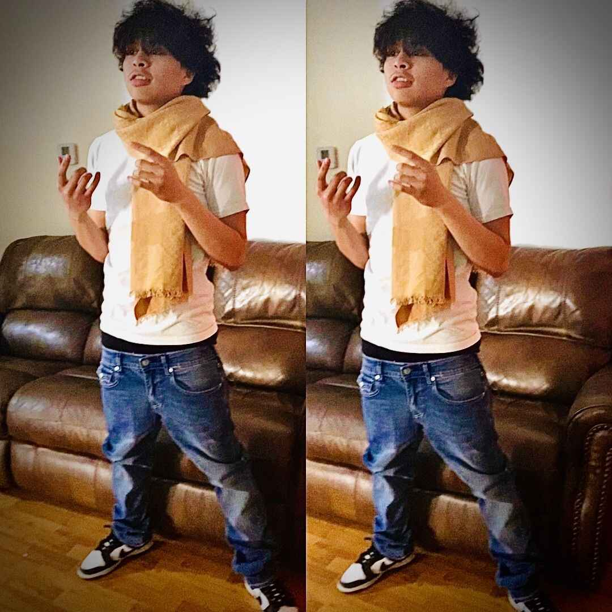

hellayercs
Member since August 6, 2025 •
Biography
hellayercs is a rapper from Florida. He first came up rapping over Detroit and Rio Da Yung Og–type beats from YouTube, and now produces his own tracks, with songs like “BAP” and “irl” on SoundCloud.
In August 2025, he joined RAINOUT, collaborating with V0CALYST and lunamaryllis, mainly being a producer and rapper.